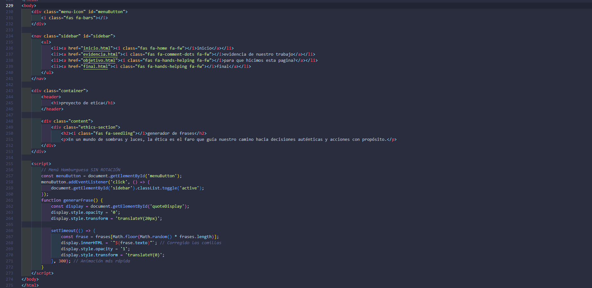

Aqui te diremos como la creamos
- lo primero que hicimos fue crear un boceto en papel para tener una idea de como queriamos que se viera la pagina.
- luego comenzamos a crear la pagina en html y css, usando un diseño limpio y moderno.
- una vez que tuvimos la estructura basica, agregamos los estilos para que se viera bien y fuera facil de usar.
- finalmente, agregamos el contenido y nos aseguramos de que todo funcionara correctamente.
- en resumen, fue un proceso de diseño y desarrollo que nos ayudo a aprender mucho sobre la creacion de paginas web.
- hicimos esta pagina para mostrar el trabajo que hicimos en clase de etica y como aprendimos a trabajar en equipo. 
Despues de mas de 1100 lineas de codigo logramos tener esta pagina